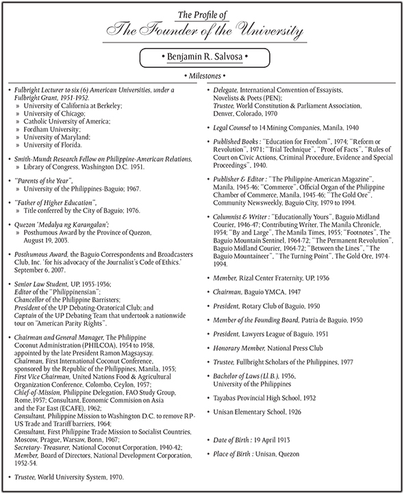

Founder's Profile
College of Information Technology and Computer Science
in Baguio City to offer a four-year course in Computer Science. Under the umbrella of the Arts and Sciences, this new
division started with barely 100 students, 4 faculty members, and one course offering: Bachelor of Science in Information
and Computer Science.
With its transition from a division to a separate college in June 1995, the College grew to more than 1,200 students
and 34 faculty members.
In keeping with the philosophy of the University of the Cordilleras, the College of Information Technology and Computer
Science has recognized its responsibility to respond to the changing needs of society, particularly in the
field of Information Technology.
The College is aware that today's technology revolves around the indispensability of the computer in the fields of
computations, database systems, web and graphics, networking and security, mobile technology and digital arts.
The present courses offered by the College are geared towards bolstering computing competencies, a vital role it
plays in the community.
In 2007, CHED Conferred the highest academic status to the college as "Center of Excellence". UC holds the distinction of
being among the nation's top nine(9) in IT education.
 History
HistoryThe beginnings of the University of the Cordilleras (Baguio Colleges Foundation) took root on June 19, 1946, when the city's
first institution of higher learning opened its doors to 156 students. With a war-ravaged Baguio as its setting, Founder and
President Atty. Benjamin R. Salvosa envisioned the event as coincident with the beginning of the city's transformation into a
university town.
The succeeding years witnessed a steady growth for the college. From modest premises located in a rented building along Session
Road, the college subsequently expanded across Assumption Road to the Lopez Building and down Mabini Street to Lam Ping Building.
In 1959, it was incorporated as a stock corporation.
From its initial offerings of teacher and liberal arts courses, the college gradually expanded its curriculum to include courses
in law, engineering and commerce. The graduate school was opened in 1950. With the expansion came corresponding growth in
enrollment, its students coming not only from immediate surrounding areas, but also from the three regions in Northern Luzon.
Later in the 50's, the University of the Cordilleras (Baguio Colleges Foundation) expanded further its Campo Filipino campus.
Finally, in 1967, it moved to its present location at the fork of Harrison and Governor Pack Roads. In the same year, Baguio
Colleges Foundation shed off its stock corporate structure and became a foundation, an non-stock, non-profit educational institution.
Today, as University of the Cordilleras (its university status was granted by Commission on Higher Education on November 22, 2003),
the school caters to more than 10,000 students enrolled in different courses in the graduate studies, law, engineering, architecture,
business administration, criminal justice education, arts and sciences, information technology and computer science, teacher education,
hotel and restaurant management, tourism, nursing, accountancy, high school, grade school, pre-school and review courses criminal justice
education and teacher education. (see - List of Academic Programs and Degrees)
Through the years, its numerous alumni, here and abroad, have distinguished themselves performing creditably, both in government
examinations and in the practice of their respective professions. In particular, the College of Law is rated among the top law schools
in the country, while the College of Engineering and Architecture, Criminal Justice Education, Information Technology and Computer
Science, and Teacher Education have gained recognition as one among the top colleges, too.